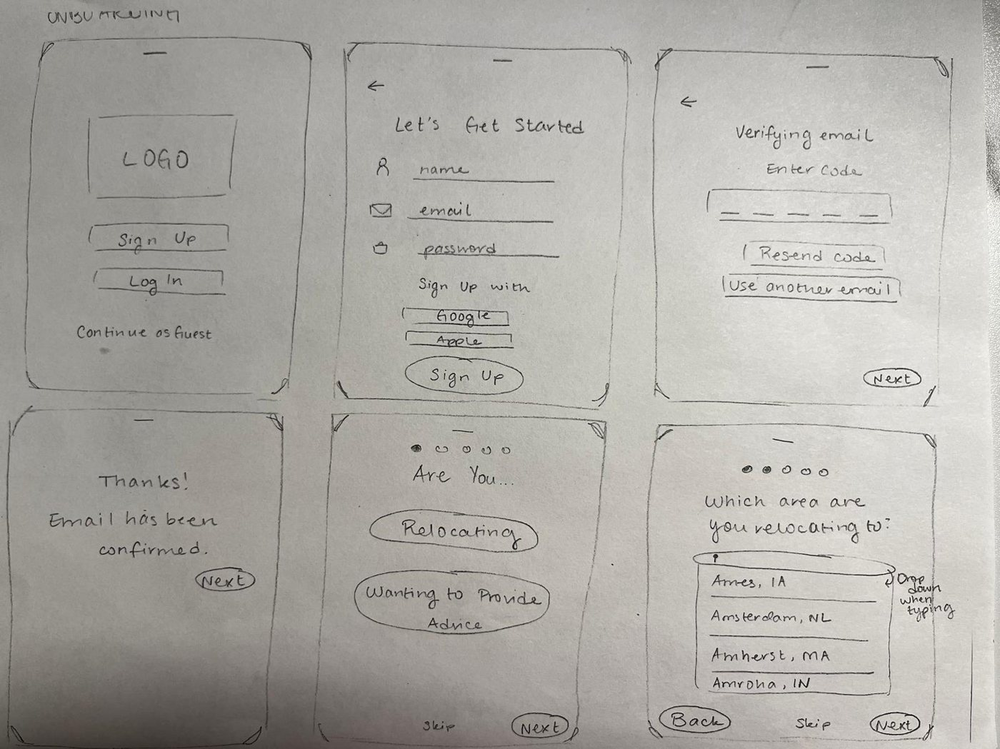
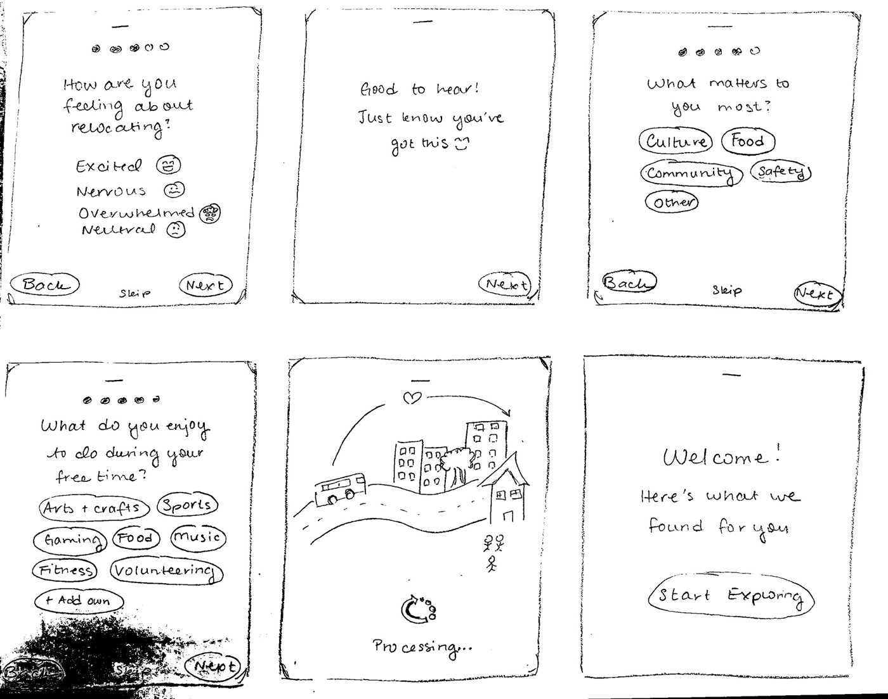
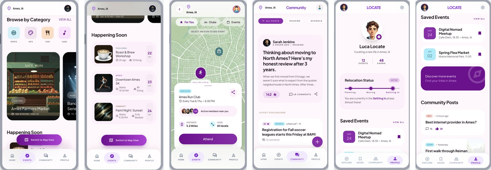
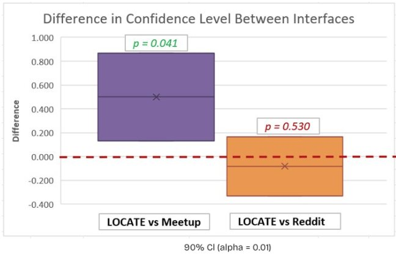
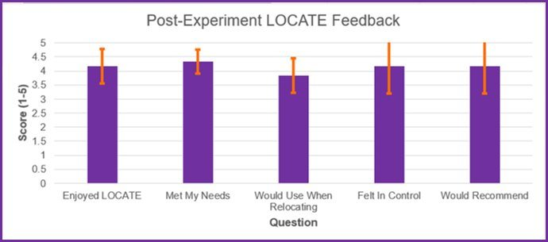

LOCATE: one app for settling into a new city
A mobile app concept that brings event discovery, local advice and social connection into one place for people who have just moved, taken from user research to a tested high-fidelity prototype.
- Context
- HCI Design & Evaluation, Iowa State, Spring 2026
- Team
- Group project, four members
- My role
- Problem framing, storyboards, paper-prototype redesign, research design, report writing
- Methods
- Personas, journey maps, two expert evaluations (heuristic evaluation, cognitive walkthrough), user study with 6 participants
The problem
Moving to a new city is isolating. Our early interviews showed that recent movers piece together what they need from several apps: Google Maps for places, Reddit for local advice, Facebook or Instagram for people, and Meetup for events. One participant put it simply: there was no single place to find local events, so they only heard about them from other people.
We designed LOCATE for adults aged 18 to 28 who have recently moved or are about to, and asked whether a single app could make those tasks easier than switching between existing ones.
My contributions
- Framing the problem. I wrote the introduction and background for the final report, including the review of how Meetup, Reddit, Facebook and Google Maps each cover only part of a newcomer's needs.
- Storyboards. I co-created the storyboards that turned each persona's journey map into a concrete scenario of use.
- Redesigning the paper prototype. After two expert evaluation sessions (heuristic evaluation and cognitive walkthroughs) on our first prototype, I redesigned the paper prototype and wrote the rationale for each change.
- Study design. I wrote the research objectives and hypotheses, the participant criteria and the study tasks, and contributed to the experiment design.
- Editing. I edited the full final report for coherence, concision and flow.
From first sketch to redesign




The two expert evaluations showed inconsistent buttons, too few answer options in onboarding, manual location entry and no clear explanation of what the app was for. The redesign asks where people are moving and what stage they are at (planning, moving or settled), adds an interest picker so recommendations are relevant straight away, and ends onboarding with a confirmation screen that summarizes their choices.



Testing it with users
After the expert evaluations shaped the redesign, six participants who had recently moved completed the same four tasks (onboarding, finding and RSVPing to an event, searching community posts, and exploring their profile) in LOCATE and in Meetup and Reddit as the baseline. We measured confidence, workload (NASA-TLX), usability (SUS), errors and satisfaction.




What we learned
Participants liked having everything in one place, but the higher error count showed where the design still got in the way. The map view was hard to find and had no clear way back to the list. The profile page tried to show too much, and labels like “Karma” didn't fit the app's purpose. Our recommendations: remove navigation dead ends, match the map and list styles, simplify the profile, and use labels that fit the relocation context.
This project taught me to treat a usability study as a source of design direction rather than a pass-or-fail test. The most useful result was the one that went against us.